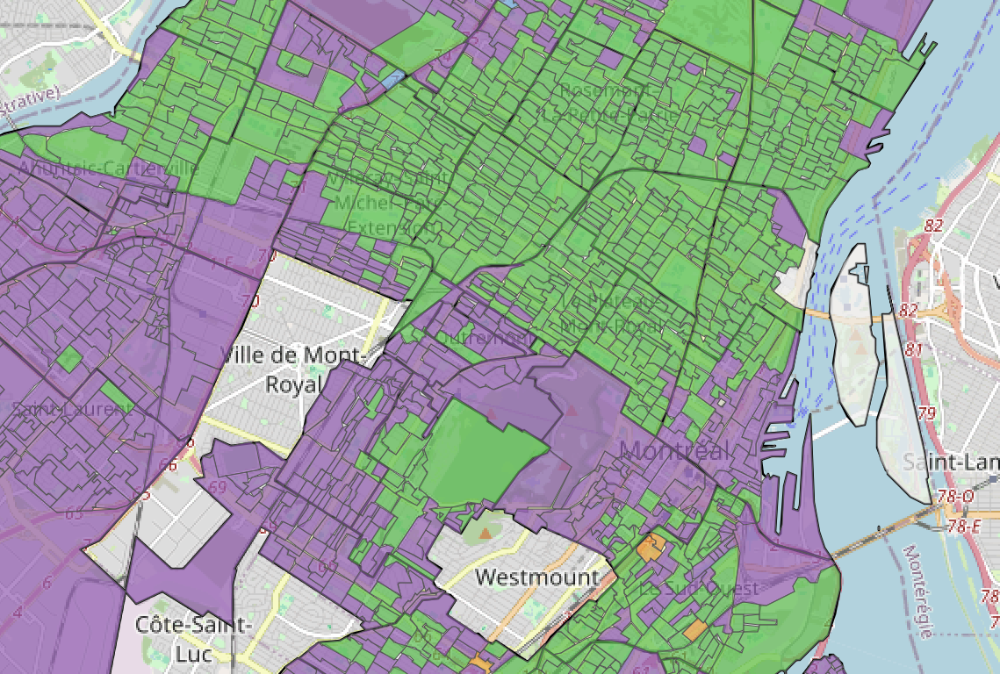
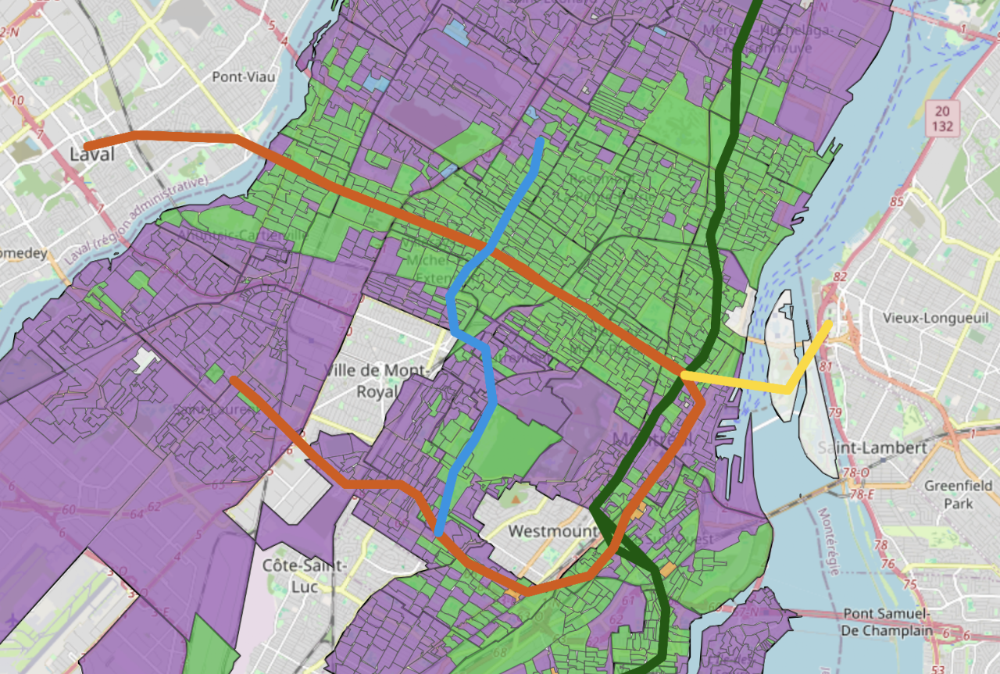

Résultats de l'élection municipale de Montréal 2025 présentés par section de vote et par district. Les données proviennent des résultats officiels.

Carte représentant les résultats par sections de vote.

Le réseau du métro de la STM a été superposé sur la carte des résultats électoraux par section de vote. Le tracé provient directement des données ouvertes de la STM.